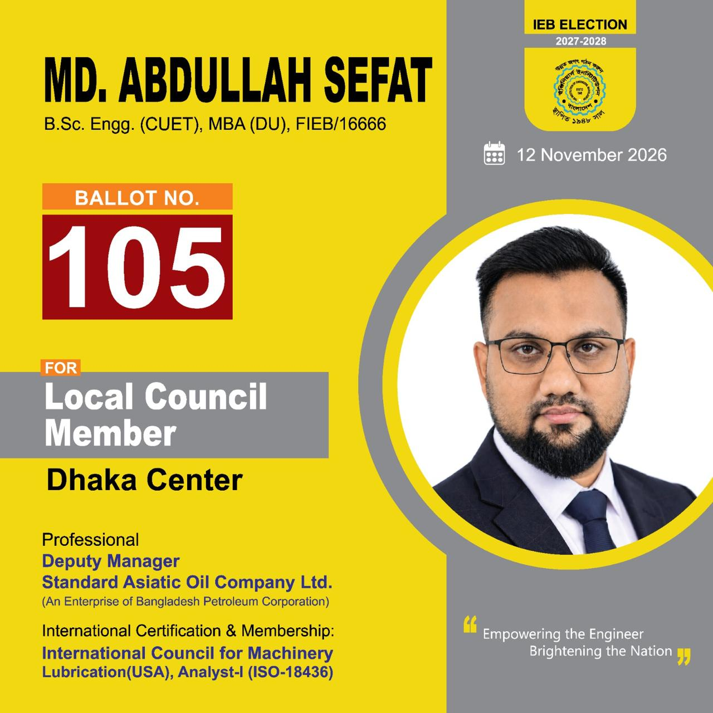

◈
ICML · USA
Machinery Lubricant Analyst — Level I
ISO 18436-4 equivalent. Listed certification renewed in 2025, with recertification due in December 2028.

Explore Sefat's Website ↓Mechanical Engineer • MBA (University of Dhaka) • Certified Machinery Lubricant Analyst. Connecting technical expertise, industry experience, and professional leadership.
I am a mechanical engineering professional with a strong background in petroleum products, industrial lubricants, operations, and sales and marketing. My work combines engineering knowledge with commercial and organizational insight.
I earned my B.Sc. in Mechanical Engineering from Chittagong University of Engineering & Technology (CUET) and an MBA in Marketing from the University of Dhaka. I have complemented these qualifications with international training and professional certifications in machinery lubrication.
A professional journey spanning industrial operations, petroleum-sector management, and commercial responsibilities.
Standard Asiatic Oil Company Ltd. · An enterprise of Bangladesh Petroleum Corporation
Standard Asiatic Oil Company Ltd. · Industrial and operational management responsibilities.
Asiatic Oil Company Ltd. / Standard Asiatic Oil Company Ltd., as described in the CV.
Corona Oil & Lubricants Ltd. · LUKOIL lubricants distribution in Bangladesh.
Specialized learning in lubrication science, industrial reliability, petroleum markets, and technical operations.
ISO 18436-4 equivalent. Listed certification renewed in 2025, with recertification due in December 2028.
Advanced machinery lubrication training and qualification completed in December 2025.
Technical training course completed in February 2019.
Industry-focused training completed in March 2022.
Specialized professional training completed in November 2018.
Training on the e-GP system, under the Bangladesh Public Procurement Authority.
Assistant Secretary, Information & Technology (2016–2026), according to the CV.
Member, Alumni Association, Department of Marketing (since 2025).
Organizational membership.
Professional membership.
Candidate for Local Council Member — Dhaka Centre, as featured in the supplied election materials.
“প্রযুক্তি দিয়ে গড়ব দেশ, সবার আগে বাংলাদেশ”
Election date shown on campaign material: 12 November 2026.
For professional inquiries, technical discussions, or industry collaboration, please get in touch through the details below.
“To utilize technical, managerial, and intellectual skills to support organizational excellence and contribute to national development.”
— Career objective, Engr. Md. Abdullah Sefat
This website presents the professional profile and selected public campaign information supplied for publication.